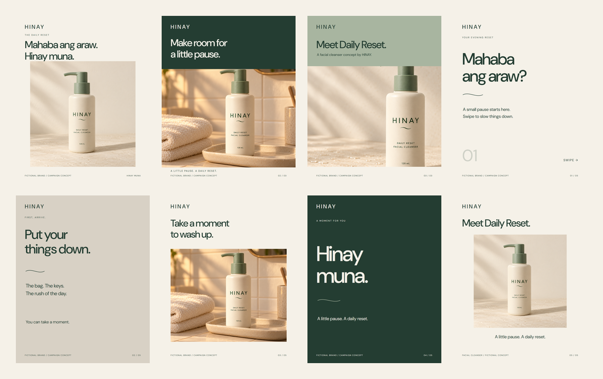

Portfolio / Project 02
HINAY
Daily Reset.
A fictional Filipino skincare identity and static launch campaign built around an everyday evening ritual.
Brand direction AI-generated imagery Campaign design
01 / Overview
The brief
Create a coherent product-content package for one fictional brand: an identity, packaging direction, product visuals, ads, carousel and launch copy. Build variety without losing product consistency.
02 / Target user
A familiar moment
The creative audience is Filipino students and young professionals, approximately 18–28. The campaign centres on coming home after a busy day. No audience interviews or demand validation were conducted.
03 / The solution
One product. One quiet story.
HINAY MUNA connects warm cream, sage packaging, natural light and short copy. Three product views support three advertising angles: introduction, evening ritual and product detail. A five-panel carousel develops the same story sequentially.

04 / Responsibilities & tools
Creative direction & production
This personal portfolio project explores brand direction, packaging, campaign layouts, and a responsive web experience. The product images are AI-generated, and Jarrell generated the video clips in Google Flow.
The campaign is a fictional concept rather than a commissioned client project. Its presentation brings the creative brief, visual assets, and product story together.
Production tools include image generation, Google Flow, SVG layout composition, DM Sans typography, and browser-based exports.
05 / Process
Reference first, layout second.
- Define the product, audience assumption, visual identity and story.
- Generate a master bottle with readable label text.
- Use that master as the reference for two additional product scenes.
- Compose headlines, disclosures and campaign layouts independently of the raster photographs.
- Export the assets, inspect layouts and package copy, source files and video handoff.
06 / Challenges & decisions
Consistency over novelty.
The main challenge is maintaining bottle proportions, pump shape and label text across generated scenes. Reusing a master reference limits drift but does not guarantee pixel-identical packaging.
Campaign typography is separate editable text so the headlines stay accurate. Warm neutral surfaces and restrained props keep attention on the product.
07 / Result & limits
A campaign in stills and motion.
Delivered: brand guide, three product images, three portrait ads, one five-panel carousel, captions, hooks, editable source layouts, and two edited vertical films. Jarrell generated the footage in Google Flow, including a corrected product shot. The footage is presented as a 15-second evening story and a 10-second product film, with campaign text and closing cards.
Watch the films · Read the actual edit notes. The exports preserve the source footage's 720 × 1280 resolution at 24fps. Source sound is retained; no music or voiceover was added.
There are no sales, engagement, conversion, client testimonials or user-research results to report. This demonstrates a creative production workflow; effectiveness has not been measured.
08 / The digital experience
From delivery gallery to brand microsite.
The second website iteration gives the campaign a visitor journey: a brand introduction, a product-photo selector, three evening-story chapters, filterable campaign artwork and a keyboard-accessible image viewer. Editorial type, arched photographs and alternating cream, sage and forest sections bring more variety to the presentation.
The original asset library remains available as the creative kit. The website demonstrates brand storytelling and interaction; it has no checkout or real product sales. Local browser checks covered seven viewport widths and the main interactions.
Explore the brand microsite → · Read the design decisions09 / Review prompts for Jarrell
Make the learning yours.
After reviewing and editing, document: which visual you chose and why, what you changed, which generated details needed correction, and what you learned about campaign consistency. Add the actual video exports and the tools used once finished.
See the honest before/after comparison →